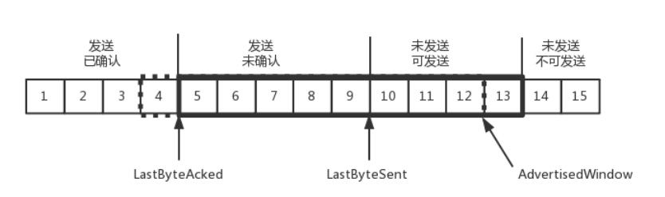

UDP&TCP
QUIC
- Quick UDP Internet Connections 快速UDP互联网连接
TCP
- A 建立连接的时候，请求包重复发了几次，有的请求包绕了一大圈又回来了，B 会认为这也是一个正常的的请求的话，因此建立了连接，可以想象，这个连接不会进行下去，也没有个终结的时候
- 所以四次握手是可以的，四十次都可以，关键四百次也不能保证就真的可靠了。只要双方的消息都有去有回，就基本可以了。
为什么每次连接需要不同的序列号
- A 连上 B 之后，发送了 1、2、3 三个包，但是发送 3 的时候，中间丢了，或者绕路了，于是重新发送，后来 A 掉线了，重新连上 B 后，序号又从 1 开始，然后发送 2，但是压根没想发送 3，但是上次绕路的那个 3 又回来了，发给了 B，B 自然认为，这就是下一个包，于是发生了错误。
结束连接
- A进入FIN_WAIT2的状态，B直接跑路，A将永远处于这个状态,通过tcp_fin_timeout处理超时
- timewait状态的作用保证B能够收到ACK，保证B没有收到FIN的ACK，会重发FIN，A会重新发送ACK给B
- A结束后A的端口空出来后，新的应用会收到上个连接B发的包，会产生混乱
- B超过2MSL时间后，仍然没有收到FIN的ACK，会重发FIN，A会回答RST
滑动窗口

- LastByteAckend
- LastByteSent
- AdvertisedWindow
- 快速重传是发送3个冗余的ACK，让对方快速发送丢失的包
HTTP2.0
- 对HTTP头进行压缩，将大量的key-value的两端建立索引表，相同的头只发索引表的索引
- 将连接切分成多个流，每个流都有自己的ID
- 将传输信息分割成更小的消息和帧，采用二进制编码
- HTTP 2.0 的客户端可以将多个请求分到不同的流中，然后将请求内容拆成帧，进行二进制传输。这些帧可以打散乱序发送， 然后根据每个帧首部的流标识符重新组装，并且可以根据优先级，决定优先处理哪个流的数据。
QUIC
- 自定义连接机制，以64位的随机数作为ID来标识
- 自定义重传机制，任何一个序列号的包只发送一次，下次就要加1，数据流里面有个偏移量 offset，根据这个来识别包
- 无阻塞的多路复用，同一个QUIC可以创建多个stream
- 自定义流量控制